This is a guide for students new to the course forum Ed. It’ll cover how to effectively ask questions and how to efficiently search for what you want. This guide is meant for people who are famililar with Piazza and we’ll make several references and comparisons.
At a high level, Ed is a high tech version of Piazza with some elements from StackOverflow. For those who are unfamiliar, StackOverflow is a public forum where people ask questions related to programming and software engineering. Full time software engineers use this all the time to get quick and reliable answers, so you should feel free to as well! Check out this link for an example question posted to StackOverflow. Now let’s get into Ed.
After reading this guide, you should feel familiar with Ed and able to make the most out of it. Let’s get into Ed specifics.
Landing page
When you first visit Ed, you’ll see that it looks similar to Piazza. All important announcements and index posts will be pinned so that you don’t need to spend too much time looking for them. That little blue dot on the left side of the post means that you haven’t viewed that post, so if you see that next to a pinned post you should definitely read it thoroughly. Here is what the landing page of CS 61BL looks like (the summer version of the course).

CS 61B is probably the only course that you’re taking that uses Ed, so your Courses tab on the left side will not be so full.
We’ll get into categories later, but think of them like tags from Piazza. Tags/categories are a way to organize your posts so that they’re super easy to search for later.
Remember that Ed is the primary point of contact between us, so make sure you read it every day, and pay special attention to it during and around due dates in the case that any deadlines change or we have any important announcements.
Next you’ll see a few recent posts, again, similar to Piazza. Now dive into the specifics of how Ed works, starting with Questions.
Question
You can create a question or note (called a “post” on Ed) by clicking the big blue ‘New Thread’ button in the top left corner and then selecting what you want to create.
Here is what an unanswered question on Ed looks like:
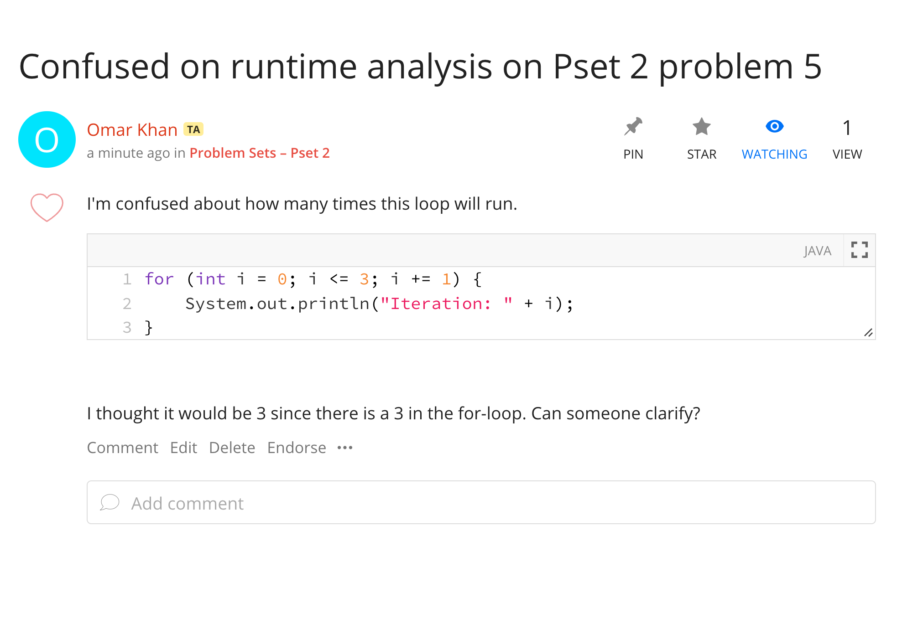
You’ll see that Omar has posted a question that he wants us to answer. Just like
in Piazza, instructors and TAs can endorse questions as well as student answers.
Only TAs and instructor’s can endorse, so you can have more confidence that the
answer is correct on this one. If you see an endorsed question, you may want
to check it out as it may be particularly insightful! Side note: on Ed there is
a difference between instructors and TAs, so only Josh will have the
instructor tag next to his name.
In Ed, there is more distinction between follow-ups under a thread. If I had a clarification on the question, I can comment on the question. This is not answering the question, so instructors and TAs will still see the question as unanswered, unlike on Piazza. You can see that Allyson has asked for the worksheet Omar’s question is from.
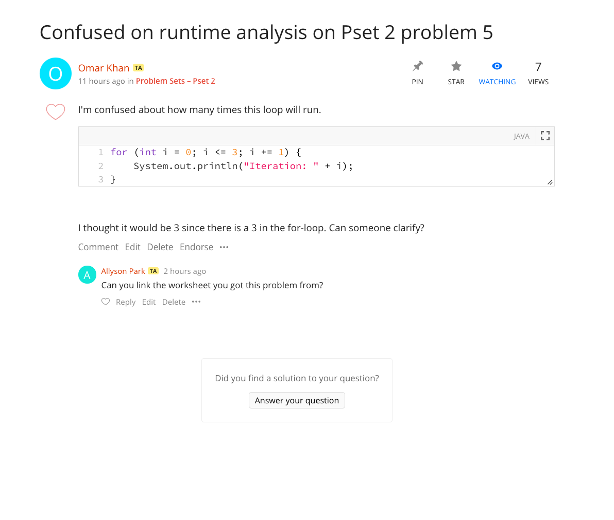
Answers
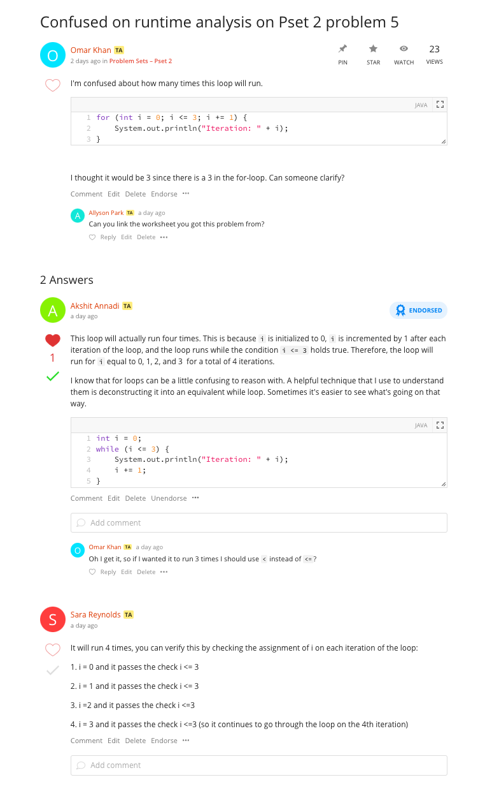
You can see that Akshit has answered Omar’s question and has even gotten his answer endorsed, liked, and has a green check mark. We’ve already talked about endorsement, it just means that an instructor or TA has verified this answer is trustworthy. Everyone can like a post, comment, or an answer, both students and staff. You can think of likes as +1s or a thank you!
The green checkmark is something that only one answer can receive on a post, so it will be given to the best answer on the post. When a staff member answers a question, it is automatically marked with a green checkmark. You can see that Sara’s answer appears lower on the page since the asker thought Akshit’s was better. This is similar to what you’d see on StackOverflow.
If you post a question on Ed, and get an answer from one of your fellow students, be sure to mark it with the green checkmark! Some student answers are just as good as ours, so if you’re happy with the answer it can save us some time.
Follow-ups and Comments
You can also create a follow-up on an answer in a hierarchical form, something that Piazza doesn’t support. With these hierarchical comments, it is much easier to track what’s going on and answer individual follow-up questions. You can see that Omar has asked a follow-up question on Akshit’s answer.
Summary of icons:
Here is a reference table if you get confused.
| Icon | Meaning |
|---|---|
| Given to just one answer on a Question, usually the best answer. | |
 |
Only given by a TA or instructor that thinks the post/answer is trustworthy. |
 |
Given by students or staff, not significant of anything but makes you feel better. |
| 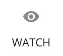 | Sets this post to be watched by you. You’ll receive email updates on any activity on this post. |
| 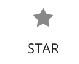 | Stars this post on your account. Allows you to use a filter to see your starred post for quick access. You might consider starring helpful posts so you can easily and quickly find them. |
Creating an Ed question
Now that we’ve talked about how to “read” an Ed post, we’ll talk about how to write one.
Categories
Categories are like tags from Piazza and help the forum stay organized. By adding a category to your post, you are helping TAs find your post and answer it quicker, and also helping other students find your post and learning from the answers.
The first thing you’ll do when you create a post is to select the right category for it and, if applicable, the right subcategory. Categories are just like tags from Piazza, and you’ll see why they’re so useful after reading about search below.
Here is an example where I will ask a question about Pset (problem set) 2:
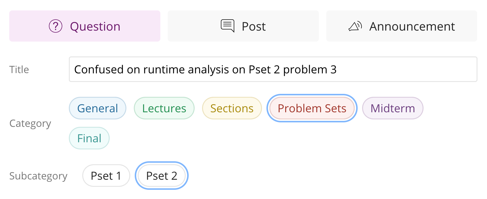
Meta options
Like in Piazza, you’ll have some options under your post if you want to ask anonymously or make your question private where all staff members can see. Feel free to ask anonymously, but instead of making private questions you should just email your mentor TA or the staff email account cs61b@berkeley.edu that only Josh and the head TAs can see.
Formatting options
If you’re really into Piazza, you’ve probably taken advantage of the generous formatting options on Piazza. This includes adding pictures, using markdown, using LaTeX, and more traditional formatting like bolding/underlining. This makes the question much nicer to read, which makes it more obvious and clear what you are trying to ask. Here is the bar where all the formatting options are located:
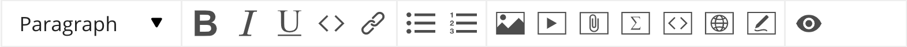
And here is a table describing how to use each formatting option.
| Icon | Meaning |
|---|---|
| 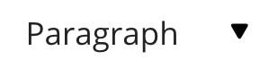 | Select this to get a drop-down menu of different text types, including code. There isn’t an explicit markdown option, just use the backticks ` as you normally would. |
| These are your typical bold, italics, and underline options. | |
| This is a shortcut to the code text type. Instead of using this, you should use the interactive code block. | |
| You can use this to hyperlink text in your post. Highlight the word or words you want to hyperlink, click this button, and paste the link. | |
| Bulleted lists and numbered lists. | |
| Inserts an image into the post. | |
| Embeds a video, you shouldn’t ever have to do this. | |
| 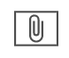 | Attaches a file to the post. You shouldn’t ever have to do this. |
| 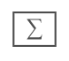 | Click this to insert LaTeX formatted math into your post. Unfortunately, this will create its own line unlike Piazza LaTeX options. Luckily, if you know LaTeX, you can just insert your single $ signs and go for it. If you don’t, it’s really simple to learn since the only thing you’ll ever do in LaTeX is easy asymptotics stuff. You can learn this within 20 minutes. |
| 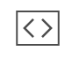 | Insert an interactive code block. Nicer than the normal code block since this has better syntax highlighting and things like automatic curly brace insertions, which is nice for Java. The language (on the right side) should be set to Java by default, but if it isn’t go ahead and change it. You’ll see 2 checkboxes for “Line Numbers” and “Runnable”. There isn’t any reason to not have line numbers, so keep those on. The runnable option allows us to run your code, but unfortunately it really doesn’t work well with Java, so uncheck this box. |
| Not useful for this class. Allows you to display basic website stuff. | |
| You can draw things with this. Could be useful if you want to make an example, but probably not a super useful feature for 61b. | |
| Used to preview your post to make sure all your fancy elements render properly. |
In the following example, you can see that Omar has asked a question about a specific problem from a specific Problem Set and has categorized it properly. Now, in the future, if another student is going through Pset 2 and has some questions they can simply use the filter to see questions in that subcategory and not have to ask duplicate questions.
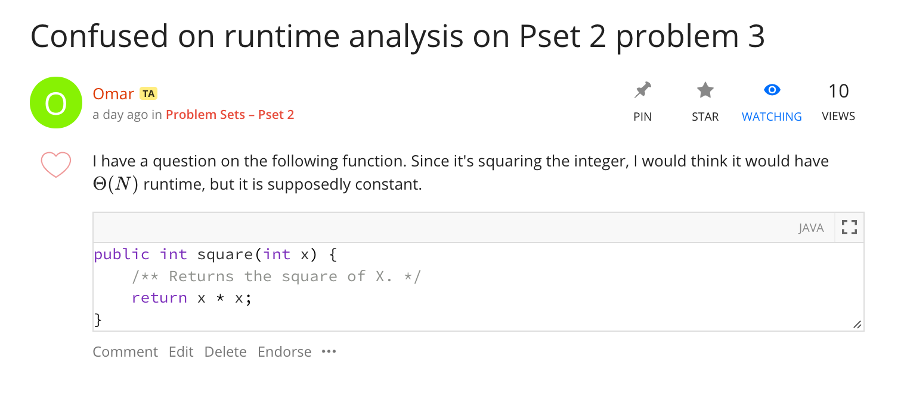
Search
Remember how we said Ed search was great? Let’s go over how to use all the search features as well as good search strategies.
Here is what the results look like for a good search:
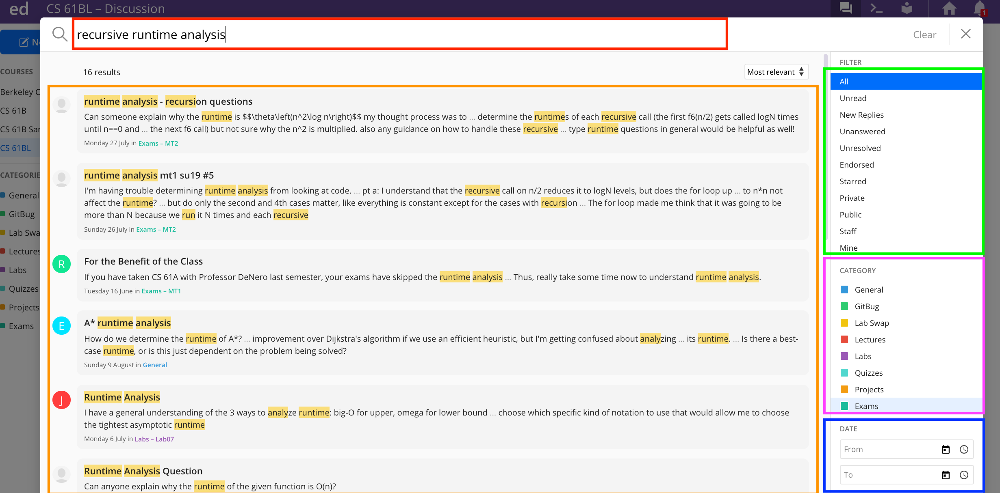
Let’s go over how to use all the search features as well as good search strategies:
Keywords
This is the red box on the image above. Ed search is a lot like Google search. If you had a general question on how to do recursive runtime analysis, you could search “How do I calculate runtime on recursive functions?”. Instead, you could also search for the key words in this well formatted question, so something like “recursive runtime analysis”, which would give you even better results. When you write a well formatted question like before, Google actually extracts the keywords for you. While we can’t write natural language questions into Ed, given the right keywords it does a very good job. Ed is able to search not only for post/question titles, but also down to sub comments level. As you type a new post title, it will also show you related posts according to what you type. Make sure to check them out, as a question you have in mind may have already been posed!
These next two features will definitely help you search, but often times the right key words will make the right post jump to the top of the results.
Filters
This is the green box on the image above.
If you’re looking for a question with an answer you can trust, you might want to filter for only endorsed posts. This will limit your search to only posts that have been endorsed by staff. Similarly, if you are a helpful student and like to answer other student’s questions, you can search for unanswered or unresolved questions and help them. Thanks in advance!
Categories
This is the purple box on the image above.
Like previously mentioned, you can limit your search to just posts in particular categories. So if there was an inheritance question on midterm 1 that you had questions about you can filter your search to posts with that subcategory.
Date ranges
This is the blue box on the image above.
You can also specify a range of dates that you want to search for. Less useful, but it exists if you need it.
Ed megathreads
In Piazza, we typically have very long threads (that we called “megathreads”) to
aggregate all questions and clarifications for a specific topic. Megathreads
are nice because you can browse through questions other students had on the
assignment to get a good “birds eye view” of the specific parts your fellow
students were getting stuck on. There is a megathread for each assignment and
thus all questions about that assignment exist in one place, and you can
then use your browser’s search (CMD + F) to find something more specific. Each
follow-up can be marked as Resolved or Unresolved to alert the TAs that a
question needs answering. This way, your question won’t get lost and we’ll
always know if the megathread needs our attention.
In Ed, we also have megathreads (as of 10/6/2020)! They function exactly the same as they did in Piazza: we will have a megathread for each assignment and you’re to post any and all questions you have about the assignment there. These megathreads will be monitored closely by staff to ensure that all questions are answered and nobody’s question got “lost” in the sea of other student questions.
But we ask that you please search for your question before asking to reduce the clutter and make Ed as effective as possible for your fellow students and TAs.
Here is what a megathread looks like in Ed:
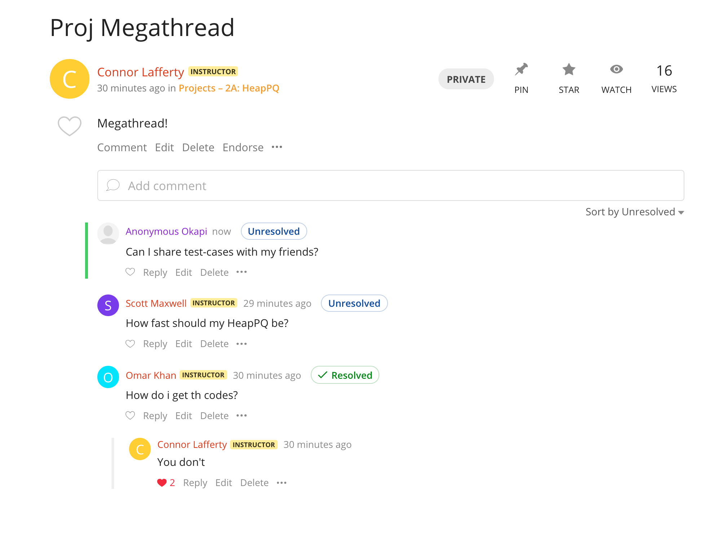
You’ll see that the top-level comments have a special flag that says Resolved
or Unresolved: this lets the TA know whether or not this comment needs
attention. It’s important to mark your comment as Unresolved after you add to
an existing comment, otherwise TAs wont know that you want that question
answered! You can mark a comment as Unresolved/Resolved by clicking the
Unresolved/Resolved button which will mark it as the opposite thing.
To add a new comment here, just start typing in the text-box right under the post that says “Add comment”:
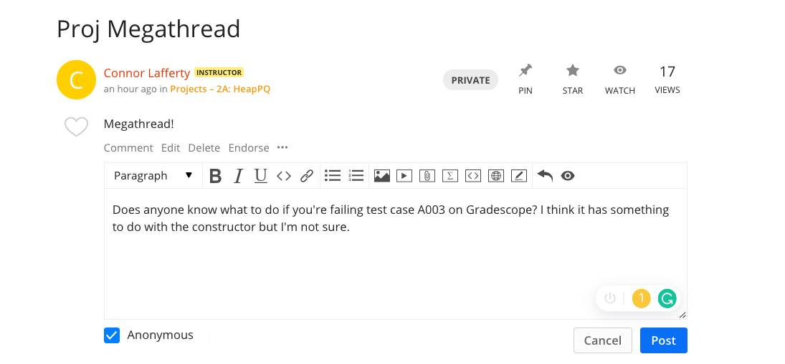
You have the ability to ask your question anonymously: if you do, you’ll be given an anonymous animal as your pseudonym (you can see that a student asked anonymously and was donned the name “Anonymous Okapi”) that we can use to reference you in follow-ups.
By default, when you post your comment it’ll be marked as Unresolved.
We’ll have our megathreads pinned, so you can find them under the “Pinned Posts” section that we talked about above.
You can also sort the comments on a megathread:
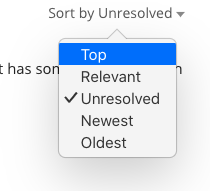
If you sort by “Top”, you’l get the comments in order of most liked to least liked. This will help you find comments that fellow students found most helpful in completing the assignment. Don’t forget to like comments you find helpful to make this sort even better!
If you sort by “Unresolved”, you’ll get the unresolved comments first and then the resolved comments afterwards. This mainly helps TAs answer all the comments that need attention, but if you like to help answer questions too you’re more than welcome to help us out :)
The guide is good for letting you know what things Ed offers, but the best way to learn it is to just use the thing! You’ll find it very similar to Piazza with a modern twist on it. Remember to keep up the Ed ettiquete so that all students can benefit from the wonderful questions you all ask :)